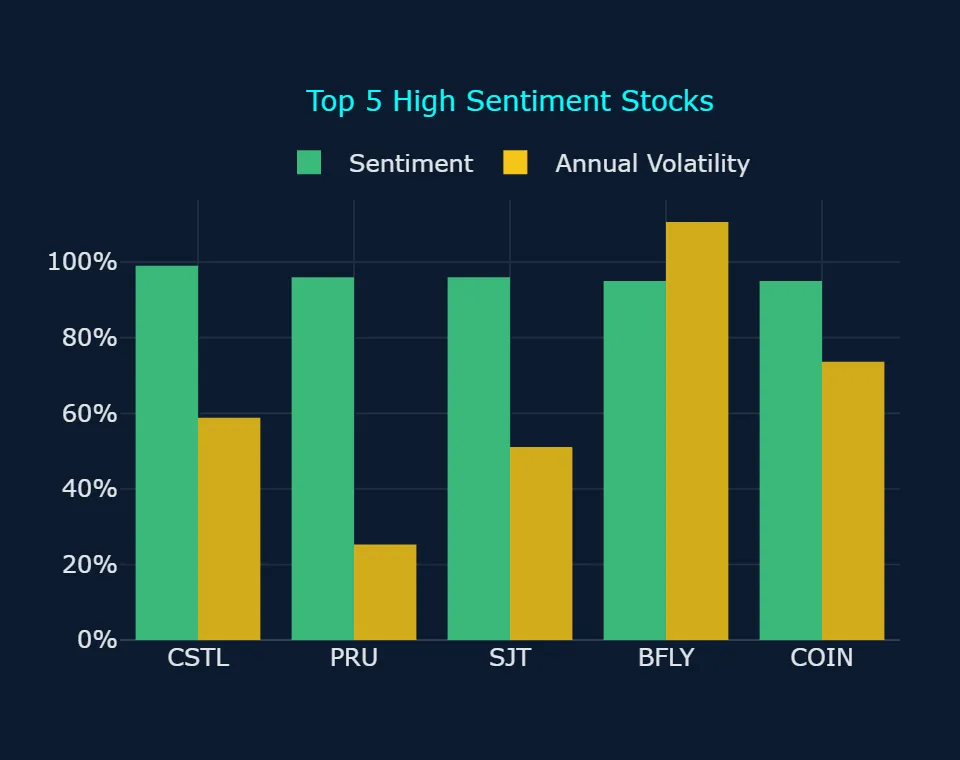
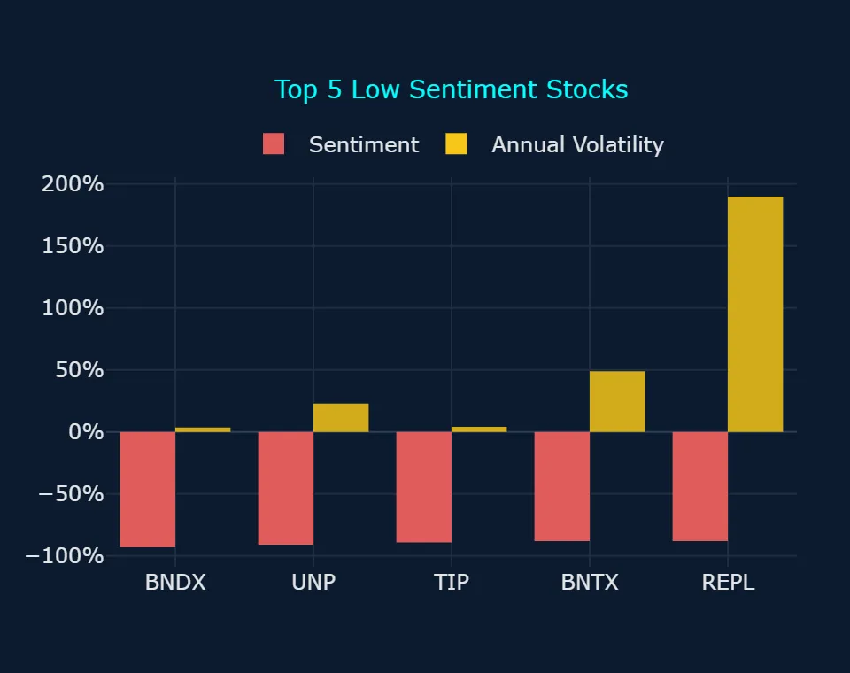
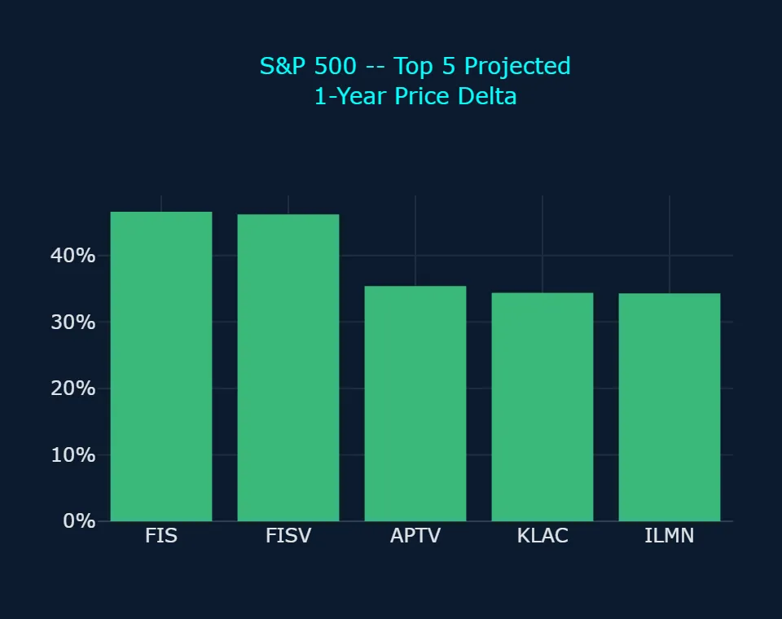
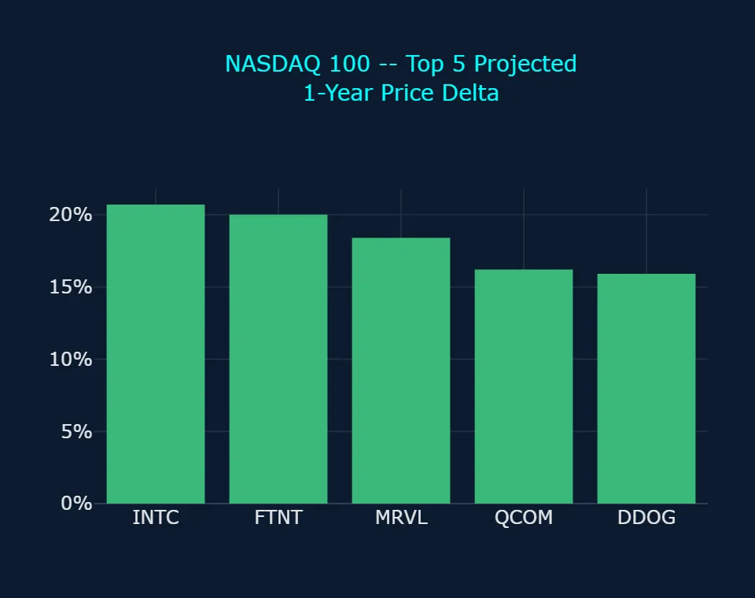
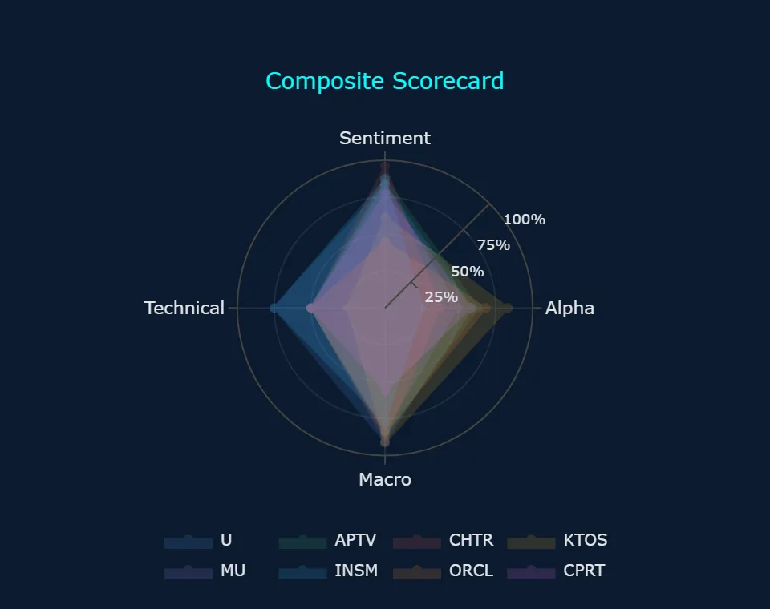
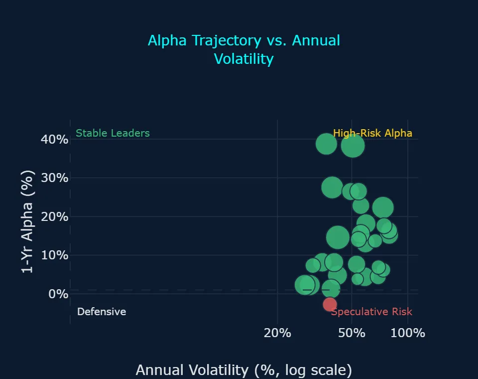
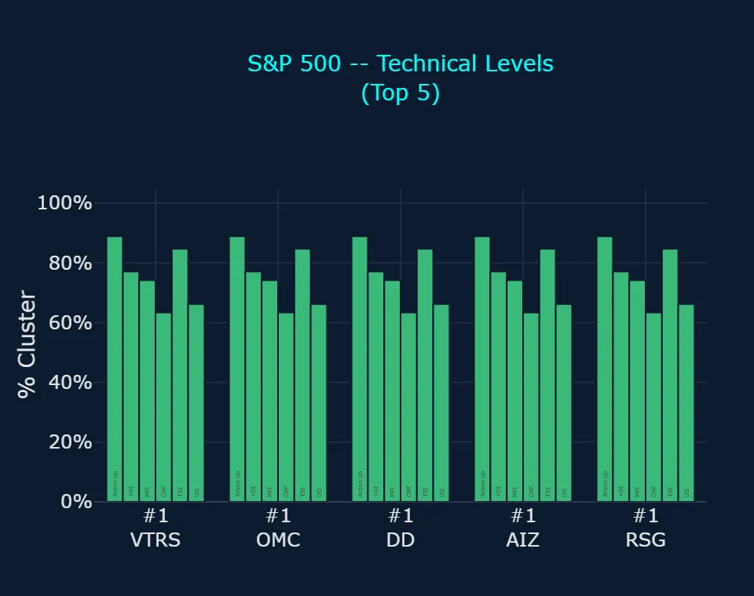
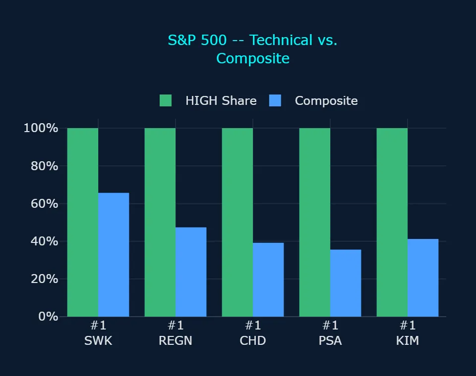
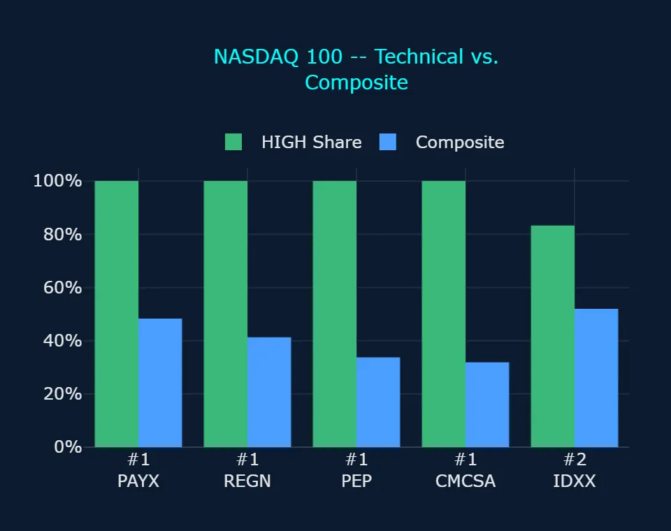

Zoonova AI: Pre-Market Quantitative Briefing – November 14, 2026
Session Quantitative Briefing: The Zoonova AI Intelligence Engine executes a hybrid architecture combining a proprietary Quad-Ensemble machine learning framework with Google Gemini Flash for real-time contextual synthesis and semantic macroeconomic grounding. The quantitative pipeline integrates four specialized estimators: Random Forest Regressor (RFR) for baseline structural stability, eXtreme Gradient Boosting (XGB) optimized for residual loss minimization, Categorical Boosting (CAT) for high-cardinality categorical signal processing, and Temporal Fusion Transformer (TFT) for multi-horizon price and volatility forecasting.
Zoonova AI: Pre-Market Momentum & Liquidity Report
1. QUANTITATIVE MODEL OVERVIEW & SIGNAL METRICS
Zoonova's predictive architecture integrates the Quad-Ensemble machine learning framework, combining Random Forest Regressor [RFR], eXtreme Gradient Boosting [XGB], Categorical Boosting [CAT], and Temporal Fusion Transformer [TFT] to generate multi-horizon price targets and excess alpha probabilities. Market sentiment scoring is driven by VADER sentiment analysis, while systemic breadth shifts and behavioral divergence patterns are captured through BIRCH clustering for anomaly detection and macro breadth modeling.
- SPDR S&P 500 ETF Trust (SPY) closed at $754.37 on 2026-11-13 with a Sentiment of -49.0% and an annualized volatility of 16.89%, while the Quad-Ensemble models project a 1-year price target of $813.56, representing an implied gain of +7.8% (Zoonova, 2026-11-13).
- Invesco QQQ Trust Series 1 (QQQ) closed at $679.89 with a positive Sentiment of +23.0% and an annualized volatility of 22.66%, supported by an expected 1-year price of $786.93 (+15.7% implied change) and an expected 1-year alpha of +7.90% (Zoonova, 2026-11-13).
- SPDR Dow Jones Industrial Average ETF (DIA) closed at $523.15 with a depressed Sentiment of -87.0% and a projected 1-year price of $544.07 (+4.0%), while Vanguard Total Bond Market ETF (BND) closed at $70.56 with a neutral Sentiment of 0.0% and an annualized volatility of 4.42% (Zoonova, 2026-11-13).
- SPDR Gold Shares ETF (GLD) closed at $355.45 with a Sentiment of -49.0% and an annualized volatility of 24.80%, tracking toward a 1-year price target of $373.59, representing an implied gain of +5.1% (Zoonova, 2026-11-13).
2. SENTIMENT INSIGHTS – TOP 5 HIGH & LOW
Top 5 High Sentiment Stocks
| Ticker | Company Name | Sentiment Score | Primary Catalyst / Driver |
|---|---|---|---|
| CSTL | Castle Biosciences Inc | +99.0% | Castle Biosciences shares gained momentum after the company reported third-quarter revenue growth of 24% to $102.9 million and raised its full-year 2026 revenue guidance to between $385 million and $395 million behind strong adoption of its TissueCypher test (MarketBeat, 2026-11-08). |
| PRU | Prudential Financial Inc. | +96.0% | Prudential Financial declared a quarterly dividend of $1.40 per share following resilient third-quarter operating performance and progress on its strategic Latin American divestitures (Business Wire, 2026-11-10). |
| SJT | San Juan Basin Royalty Trust | +96.0% | San Juan Basin Royalty Trust experienced heavy accumulation as major shareholder Eric Oliver purchased 203,962 shares on November 12, increasing insider ownership despite distributable losses (MarketBeat, 2026-11-13). |
| BFLY | Butterfly Network Inc | +95.0% | Butterfly Network generated positive momentum after highlighting accelerated commercial licensing partnerships for its Ultrasound-on-Chip semiconductor platform at the UBS Global Healthcare Conference (Seeking Alpha, 2026-11-10). |
| COIN | Coinbase Global Inc | +95.0% | Coinbase Global advanced after securing an unconditional national trust charter from the Office of the Comptroller of the Currency to expand regulated digital asset custody and reserve management operations (Banking Dive, 2026-11-09). |
Top 5 Low Sentiment Stocks
| Ticker | Company Name | Sentiment Score | Primary Friction / Risk Factor |
|---|---|---|---|
| APH | Amphenol Corp. | -90.0% | Amphenol faced profit-taking following its third-quarter earnings report as broader valuation scrutiny pressured high-multiple electronic component manufacturers (Newsquawk, 2026-10-28). |
| AVGO | Broadcom Inc | -90.0% | Broadcom fell toward its 52-week low near $292.40 as investor concerns mounted regarding post-election regulatory scrutiny over data-center infrastructure spending and high-cost capital commitments (24/7 Wall St., 2026-11-05). |
| MU | Micron Technology Inc. | -90.0% | Micron Technology declined under pressure from rising long-term Treasury yields and renewed concerns over memory-chip pricing cycles across the semiconductor hardware sector (Tickeron, 2026-11-13). |
| PSNL | Personalis Inc | -89.0% | Personalis saw negative sentiment deepen amid shareholder investigations and merger spread limits surrounding its pending $16.25 per share acquisition by Tempus AI (PR Newswire, 2026-11-03). |
| DIA* | SPDR Dow Jones Industrial Average ETF | -87.0% | SPDR Dow Jones Industrial Average ETF (DIA) declined as hawkish Federal Reserve interest rate expectations and hot wholesale inflation data dampened sentiment across cyclical industrial constituents (Charles Schwab, 2026-11-13). |
* ETF (exchange-traded fund)
3. ALPHA PROBABILITY & PRICE DELTA LEADERBOARD – 1-YEAR HORIZON
S&P 500 – Top 5 High Alpha Probability (1yr)
| Ticker | Current Price ($) | 1-Yr Target Price ($) | Alpha Probability (%) | Implied Excess Alpha (%) | 10%+ Alpha? |
|---|---|---|---|---|---|
| FISV | $63.78 | $93.24 | 93.02% | 38.34% | Both Yes |
| APTV | $38.75 | $52.45 | 74.68% | 27.51% | Both Yes |
| CSGP | $30.96 | $37.91 | 74.15% | 14.60% | Both Yes |
| FIS | $29.54 | $43.32 | 74.04% | 38.79% | Both Yes |
| HBAN | $15.82 | $17.43 | 71.04% | 2.29% | Split |
S&P 500 – Top 5 Price Delta + % Change (1yr)
| Ticker | Current Price ($) | 1-Yr Target Price ($) | Absolute Delta ($) | Projected 1-Yr % Change (%) | Implied Excess Alpha (%) |
|---|---|---|---|---|---|
| FIS | $29.54 | $43.32 | $13.78 | 46.65% | 38.79% |
| FISV | $63.78 | $93.24 | $29.46 | 46.19% | 38.34% |
| APTV | $38.75 | $52.45 | $13.70 | 35.35% | 27.51% |
| KLAC | $152.32 | $204.69 | $52.37 | 34.38% | 26.53% |
| ILMN | $207.01 | $278.01 | $71.00 | 34.30% | 26.45% |
NASDAQ 100 – Top 5 High Alpha Probability (1yr)
| Ticker | Current Price ($) | 1-Yr Target Price ($) | Alpha Probability (%) | Implied Excess Alpha (%) | 10%+ Alpha? |
|---|---|---|---|---|---|
| CPRT | $31.83 | $35.05 | 60.23% | 2.26% | Split |
| PYPL | $59.28 | $68.78 | 43.86% | 8.18% | Both No |
| NFLX | $62.15 | $72.08 | 32.87% | 8.14% | Both No |
| PDD | $78.97 | $86.16 | 31.45% | 1.27% | Both No |
| DXCM | $83.33 | $93.87 | 30.71% | 4.79% | Both No |
NASDAQ 100 – Top 5 Price Delta + % Change (1yr)
| Ticker | Current Price ($) | 1-Yr Target Price ($) | Absolute Delta ($) | Projected 1-Yr % Change (%) | Implied Excess Alpha (%) |
|---|---|---|---|---|---|
| KLAC | $152.32 | $204.69 | $52.37 | 34.38% | 26.53% |
| MCHP | $61.68 | $80.61 | $18.93 | 30.69% | 22.83% |
| LRCX | $225.92 | $284.59 | $58.67 | 25.97% | 18.13% |
| INTC | $59.66 | $74.84 | $15.18 | 25.44% | 17.61% |
| MRVL | $156.76 | $194.80 | $38.04 | 24.27% | 16.42% |
4. REAL-TIME CONTEXTUAL ENRICHMENT
Macroeconomic conditions tightened markedly heading into mid-November 2026 as stubborn inflation data altered expectations for Federal Reserve policy. The Bureau of Labor Statistics reported that headline Consumer Price Index (CPI) climbed 0.4% month-over-month in October with core CPI rising 0.3% (Bureau of Labor Statistics, 2026-11-10), followed by a 6.5% annual jump in the Producer Price Index (The Motley Fool, 2026-11-13). Following hawkish commentary from Federal Reserve Governor Christopher Waller, markets adjusted to price in a 90%+ probability of an interest rate hike in December, driving 10-year Treasury yields up 30 basis points over the week (Nasdaq, 2026-11-13). This macro tightening has triggered pronounced sector rotations out of capital-intensive hardware and debt-sensitive cyclicals, directly reflected in the -87.0% Sentiment for SPDR Dow Jones Industrial Average ETF (DIA) and -49.0% Sentiment for SPDR S&P 500 ETF Trust (SPY) (Zoonova, 2026-11-13).
Within the Main Scorecard, high-conviction financial technology and data services demonstrate the strongest quantitative profiles against this macro backdrop. Fiserv, Inc. (FISV) leads the Main Scorecard with a Composite of 76.9, an Alpha Rating of 99.1, and a Macro Alignment of 92.3, where both models expect it to beat the benchmark by 10%+ based on a 93.02% Alpha Probability and an expected 1-year alpha of +38.34% toward a target price of $93.24 (Zoonova, 2026-11-13). Fidelity National Information Services, Inc. (FIS) holds a Composite of 65.4 and Macro Alignment of 92.4, where both models expect it to beat the benchmark by 10%+ with a 74.04% Alpha Probability and an expected 1-year alpha of +38.79% to $43.32 (Zoonova, 2026-11-13). Aptiv PLC (APTV) and CoStar Group, Inc. (CSGP) also show strong institutional sponsorship, with CSGP achieving a Composite of 74.9 and Sentiment Rating of 88.0, and APTV registering a Composite of 67.1 and Macro Alignment of 90.9, as both models expect each stock to beat the benchmark by 10%+ (Zoonova, 2026-11-13). Conversely, Copart, Inc. (CPRT) records a Composite of 59.3 where the two models split: its Alpha Probability reaches 60.23%, but its expected 1-year alpha is limited to +2.26% (Zoonova, 2026-11-13).
In the Tech Stock Scorecard, mega-cap platforms display restrained alpha potential despite steady commercial fundamentals. Meta Platforms Inc leads the Tech Stock Scorecard with a Composite of 52.6 and Sentiment Rating of 91.0, though neither model expects 10%+ outperformance due to an Alpha Rating of 7.5 (Zoonova, 2026-11-13). Alphabet Inc follows with a Composite of 41.4 and Sentiment Rating of 77.0, while Apple Inc posts a Composite of 23.4 with an Alpha Rating of 1.7 and Macro Alignment of 8.2 (Zoonova, 2026-11-13). Semiconductor hardware constituents show acute technical deterioration: Broadcom Inc holds the lowest Composite in the Tech Stock Scorecard at 20.4 alongside a Sentiment Rating of 5.0 and Alpha Rating of 1.2, while Advanced Micro Devices Inc sits at a Composite of 28.6 (Zoonova, 2026-11-13). Both semiconductor names registered short-term 3-day bearish trend anomalies, confirming that the sector-wide pullback is encountering substantial resistance (Zoonova, 2026-11-13).
5. ANOMALY DETECTION SCANNER
Direction: Bearish
Low Severity (12 stocks)
- AMD – Advanced Micro Devices Inc.: Bearish Short-Term (3d) Trend Anomaly
- AVGO – Broadcom Inc: Bearish Short-Term (3d) Trend Anomaly
- CSCO – Cisco Systems, Inc.: Bearish Short-Term (3d) Trend Anomaly
- GLW – Corning, Inc.: Bearish Short-Term (3d) Trend Anomaly
- HPE – Hewlett Packard Enterprise Co: Bearish Short-Term (3d) Trend Anomaly
- MRNA – Moderna Inc: Bearish Long-Term (1w) Trend Anomaly
- RVMD – Revolution Medicines Inc: Bearish Long-Term (1w) Trend Anomaly
- STX – Seagate Technology Holdings Plc: Bearish Short-Term (3d) Trend Anomaly
- TER – Teradyne, Inc.: Bearish Short-Term (3d) Trend Anomaly
- VIR – Vir Biotechnology Inc: Bearish Short-Term (3d) Trend Anomaly
- WDC – Western Digital Corp.: Bearish Short-Term (3d) Trend Anomaly
- ZYME – Zymeworks BC Inc: Bearish Long-Term (1w) Trend Anomaly
Direction: Bullish
Low Severity (4 stocks)
- FOX – Fox Corporation: Bullish Short-Term (3d) Trend Anomaly
- FOXA – Fox Corporation: Bullish Short-Term (3d) Trend Anomaly
- MPC – Marathon Petroleum Corp: Bullish Long-Term (1w) Trend Anomaly
- VLO – Valero Energy Corp.: Bullish Long-Term (1w) Trend Anomaly
Direction: Mixed
Moderate Severity (1 stock)
- MU – Micron Technology Inc.: Bearish Short-Term (3d) Trend Anomaly, Bullish Long-Term (1w) Trend Anomaly
6. STRATEGIC INVESTMENT ASSESSMENT
- Rebalance portfolio allocations toward defensive, high-quality financial technology and enterprise data providers: Focus exposure on names where both models expect 10%+ benchmark outperformance and Macro Alignment scores exceed 90, led by Fiserv, Inc. (Composite 76.9) and Fidelity National Information Services, Inc. (Composite 65.4) (Zoonova, 2026-11-13).
- Maintain tactical caution across semiconductor and hardware infrastructure: The BIRCH anomaly detector registered 12 stocks with low-severity bearish trend anomalies, heavily concentrated in chipmakers and storage suppliers including Advanced Micro Devices Inc, Broadcom Inc, Teradyne, Inc., and Western Digital Corp., alongside 1 stock (Micron Technology Inc.) displaying moderate mixed trend anomalies (Zoonova, 2026-11-13).
- Exploit idiosyncratic growth catalysts in specialized medical screening and diagnostics: Selectively participate in high-sentiment leaders such as Castle Biosciences Inc (Sentiment +99.0%, Sentiment Rating 99.5) following guidance upgrades, while recognizing that neither model expects 10%+ benchmark outperformance over a 1-year horizon (Zoonova, 2026-11-13).
- Position equity benchmark exposure strategically: Favor Invesco QQQ Trust Series 1 (QQQ) over SPDR S&P 500 ETF Trust (SPY) for long-term growth, as the Quad-Ensemble models project a 1-year gain of +15.7% to $786.93 and +7.90% excess alpha for QQQ compared to +7.8% to $813.56 with flat alpha for SPY (Zoonova, 2026-11-13).
7. STOCK SCORECARD
Main Scorecard
| Ticker | Composite (%) | Alpha Rating | 10%+ Alpha? | Projected 1-Yr Change (%) | Street Consensus (Upside) | Next Earnings | Sentiment Rating | Technical Signal | Macro Alignment | Anomaly Flag | Catalyst / Risk | Market Cap | EPS Revisions (30d) | Short Interest / DTC | Options Flow | Earnings Surprise (4Q) | Bias |
|---|---|---|---|---|---|---|---|---|---|---|---|---|---|---|---|---|---|
| FISV | 76.9% | 99.1 | Both Yes | +46.2% | Hold (-3.3%) | 2027-02-04 | 65.0 | 50.0 | 92.3 | None | Merchant Acquiring Volume | $32.7B | Neutral/Flat (0.0%) | 3.5% / 3.1 DTC | Neutral / Mixed | 3/4 Beats | Bullish |
| CSGP | 74.9% | 79.0 | Both Yes | +22.4% | Hold (+21.4%) | 2027-02-23 | 88.0 | 50.0 | 83.6 | None | Residential Marketplace Investments | $12.3B | Downward (-4.2%) | 4.7% / 2.5 DTC | Neutral / Mixed | 4/4 Beats (+11.8% avg) | Bullish |
| APTV | 67.1% | 79.6 | Both Yes | +35.4% | Buy (+67.5%) | 2027-02-01 | 50.0 | 50.0 | 90.9 | None | Vehicle Electrification Headwinds | $8.8B | Downward (-3.8%) | 4.5% / 3.4 DTC | Bearish (Put Heavy) | 4/4 Beats (+6.8% avg) | Bullish |
| COIN | 65.8% | 37.1 | Split | +30.2% | Hold (+62.9%) | 2027-02-11 | 97.5 | 50.0 | 89.0 | None | Crypto Trading Volume | $36.0B | Downward (-129.6%) | 10.3% / 2.9 DTC | Bearish (Put Heavy) | 3/4 Beats | Bullish |
| FIS | 65.4% | 78.9 | Both Yes | +46.6% | Hold (+53.0%) | 2027-02-22 | 43.0 | 50.0 | 92.4 | None | Banking Software Modernization | $15.3B | Downward (-8.1%) | 3.8% / 2.7 DTC | Bearish (Put Heavy) | 3/4 Beats | Bullish |
| LRCX | 54.7% | 11.9 | Split | +26.0% | Strong Buy (+60.3%) | 2027-01-27 | 86.0 | 50.0 | 85.9 | None | Wafer Fab Spending | $282.2B | Upward (+5.8%) | 2.1% / 2.3 DTC | Bullish (Call Skew) | 4/4 Beats (+3.5% avg) | Neutral |
| CSTL | 52.4% | 7.2 | Both No | +12.3% | Strong Buy (+40.3%) | 2027-03-02 | 99.5 | 50.0 | 64.1 | None | Diagnostic Volume Acceleration | $1.1B | Upward (+14.2%) | 7.0% / 6.0 DTC | Neutral / Mixed | 4/4 Beats (+12.4% avg) | Neutral |
| GLW | 51.1% | 53.3 | Both Yes | +20.9% | Buy (+52.9%) | 2027-01-26 | 50.0 | 25.0 | 81.6 | Bearish (3d) | Optical Communications Demand | $98.2B | Upward (+3.3%) | 2.4% / 2.8 DTC | Neutral / Mixed | 4/4 Beats (+4.1% avg) | Neutral |
| VIR | 49.3% | 18.8 | Split | +23.1% | Buy (+125.9%) | 2027-02-25 | 82.5 | 25.0 | 84.0 | Bearish (3d) | Hepatitis Clinical Trial | $2.1B | Downward (-12.5%) | 13.5% / 4.2 DTC | Bearish (Put Heavy) | 2/4 Beats | Neutral |
| APH | 48.4% | 59.2 | Both Yes | +23.4% | Strong Buy (+36.8%) | 2027-01-27 | 5.0 | 50.0 | 84.4 | None | AI Datacom Growth | $197.4B | Upward (+9.6%) | 1.8% / 2.1 DTC | Bullish (Call Skew) | 4/4 Beats (+9.4% avg) | Bearish |
| ZYME | 46.2% | 9.1 | Both No | +15.5% | Strong Buy (+58.9%) | 2027-03-05 | 91.0 | 25.0 | 72.2 | Bearish (1w) | Roche Partnership Milestone | $1.8B | Upward (+8.5%) | 12.5% / 4.4 DTC | Bullish (Call Skew) | 3/4 Beats | Neutral |
| TER | 37.0% | 11.7 | Both No | +12.3% | Buy (+59.4%) | 2027-01-27 | 57.5 | 25.0 | 64.4 | Bearish (3d) | Semiconductor Test Demand | $41.2B | Upward (+11.2%) | 3.1% / 2.4 DTC | Bullish (Call Skew) | 4/4 Beats (+15.8% avg) | Bearish |
| HPE | 36.5% | 4.0 | Split | +21.9% | Buy (+49.5%) | 2026-11-23 (in 9d) | 50.0 | 25.0 | 83.0 | Bearish (3d) | AI Server Shipments | $66.6B | Upward (+6.7%) | 3.9% / 2.2 DTC | Bullish (Call Skew) | 3/4 Beats | Bearish |
| INTC | 36.4% | 4.7 | Split | +25.4% | Hold (+52.0%) | 2027-01-28 | 21.5 | 50.0 | 85.6 | None | Foundry Yield Progress | $317.1B | Downward (-6.5%) | 3.2% / 1.6 DTC | Neutral / Mixed | 3/4 Beats | Bearish |
| CSCO | 33.9% | 8.3 | Both No | +15.2% | Buy (+35.3%) | 2027-02-10 | 43.5 | 25.0 | 71.5 | Bearish (3d) | Enterprise AI Networking | $376.5B | Upward (+4.5%) | 1.4% / 1.8 DTC | Bearish (Put Heavy) | 4/4 Beats (+5.2% avg) | Bearish |
| VLO | 32.4% | 1.6 | Both No | +5.1% | Buy (+10.3%) | 2027-01-27 | 43.5 | 75.0 | 11.3 | Bullish (1w) | Refining Margin Expansion | $105.9B | Upward (+12.3%) | 2.6% / 2.3 DTC | Bullish (Call Skew) | 4/4 Beats (+18.2% avg) | Bearish |
| MU | 29.7% | 6.9 | Both No | +14.0% | Strong Buy (+100.7%) | 2026-12-17 (in 33d) | 5.0 | 50.0 | 69.2 | Bullish (1w), Bearish (3d) | High Bandwidth Memory | $880.7B | Upward (+18.4%) | 2.8% / 1.7 DTC | Unusual Volume Detected | 4/4 Beats (+14.2% avg) | Bearish |
| WDC | 29.2% | 9.9 | Both No | +14.8% | Buy (+107.5%) | 2027-02-04 | 23.5 | 25.0 | 70.6 | Bearish (3d) | Nearline Cloud Storage | $110.7B | Upward (+13.5%) | 3.4% / 2.6 DTC | Bullish (Call Skew) | 4/4 Beats (+12.8% avg) | Bearish |
| AMD | 28.6% | 1.7 | Split | +21.6% | Strong Buy (+23.5%) | 2027-02-02 | 21.5 | 25.0 | 82.4 | Bearish (3d) | Data Center GPU | $906.8B | Upward (+7.2%) | 2.5% / 2.0 DTC | Unusual Volume Detected | 4/4 Beats (+6.1% avg) | Bearish |
| AVGO | 20.4% | 1.2 | Both No | +11.6% | Strong Buy (+51.6%) | 2026-12-09 (in 25d) | 5.0 | 25.0 | 62.9 | Bearish (3d) | Custom AI Silicon | $1.74T | Upward (+4.2%) | 1.9% / 2.4 DTC | Bullish (Call Skew) | 4/4 Beats (+3.3% avg) | Bearish |
10%+ Alpha? – whether Zoonova's two 1-year models (alpha probability and price target) expect the stock to beat the benchmark by 10%+. “Both No” is common: 10% is a high bar.
Tech Stock Scorecard
| Ticker | Composite (%) | Alpha Rating | 10%+ Alpha? | Projected 1-Yr Change (%) | Street Consensus (Upside) | Next Earnings | Sentiment Rating | Technical Signal | Macro Alignment | Anomaly Flag | Catalyst / Risk | Market Cap | EPS Revisions (30d) | Short Interest / DTC | Options Flow | Earnings Surprise (4Q) | Bias |
|---|---|---|---|---|---|---|---|---|---|---|---|---|---|---|---|---|---|
| META | 52.6% | 7.5 | Both No | +17.1% | Strong Buy (+32.5%) | 2027-02-03 | 91.0 | 50.0 | 75.4 | None | AI Advertising Optimization | $1.64T | Downward (-5.4%) | 1.3% / 1.6 DTC | Bullish (Call Skew) | 3/4 Beats | Neutral |
| GOOGL | 41.4% | 1.6 | Both No | +8.7% | Strong Buy (+32.6%) | 2027-02-02 | 77.0 | 50.0 | 45.9 | None | Cloud Backlog Growth | $3.64T | Upward (+5.1%) | 1.2% / 1.4 DTC | Neutral / Mixed | 3/4 Beats | Neutral |
| NVDA | 37.7% | 0.9 | Both No | +11.3% | Buy (+74.3%) | 2026-11-17 (in 3d) | 50.0 | 50.0 | 62.2 | None | Leadership Transition Uncertainty | $3.93T | Downward (-4.1%) | 1.5% / 1.4 DTC | Unusual Volume Detected | 4/4 Beats (+6.3% avg) | Bearish |
| INTC | 36.4% | 4.7 | Split | +25.4% | Hold (+52.0%) | 2027-01-28 | 21.5 | 50.0 | 85.6 | None | Foundry Yield Progress | $317.1B | Downward (-6.5%) | 3.2% / 1.6 DTC | Neutral / Mixed | 3/4 Beats | Bearish |
| TSLA | 31.8% | 0.7 | Both No | +8.0% | Hold (+6.0%) | 2027-01-27 | 45.0 | 50.0 | 39.1 | None | Autonomous Driving Milestones | $1.54T | Upward (+4.2%) | 3.2% / 2.1 DTC | Unusual Volume Detected | 2/4 Beats | Bearish |
| AMZN | 28.7% | 1.1 | Both No | +6.0% | Strong Buy (+23.5%) | 2027-01-28 | 50.0 | 50.0 | 17.1 | None | Cloud Infrastructure Capex | $2.88T | Downward (-2.8%) | 1.1% / 1.5 DTC | Neutral / Mixed | 3/4 Beats | Bearish |
| AMD | 28.6% | 1.7 | Split | +21.6% | Strong Buy (+23.5%) | 2027-02-02 | 21.5 | 25.0 | 82.4 | Bearish (3d) | Data Center GPU | $906.8B | Upward (+7.2%) | 2.5% / 2.0 DTC | Unusual Volume Detected | 4/4 Beats (+6.1% avg) | Bearish |
| MSFT | 27.3% | 0.3 | Both No | +5.1% | Strong Buy (+21.4%) | 2027-01-26 | 50.0 | 50.0 | 11.0 | None | Azure Cloud Monetization | $3.89T | Upward (+3.6%) | 0.8% / 1.2 DTC | Bullish (Call Skew) | 4/4 Beats (+4.0% avg) | Bearish |
| AAPL | 23.4% | 1.7 | Both No | +4.6% | Buy (-2.7%) | 2027-01-28 | 35.0 | 50.0 | 8.2 | None | Hardware Upgrade Cycles | $5.18T | Upward (+3.2%) | 0.9% / 1.3 DTC | Bullish (Call Skew) | 4/4 Beats (+5.6% avg) | Bearish |
| AVGO | 20.4% | 1.2 | Both No | +11.6% | Strong Buy (+51.6%) | 2026-12-09 (in 25d) | 5.0 | 25.0 | 62.9 | Bearish (3d) | Custom AI Silicon | $1.74T | Upward (+4.2%) | 1.9% / 2.4 DTC | Bullish (Call Skew) | 4/4 Beats (+3.3% avg) | Bearish |
| SPCX | N/H | N/H | N/A | N/A | Buy | 2027-02-25 | N/H | N/H | N/H | None | Starlink Connectivity Expansion | $1.90T | Downward (-12.0%) | 2.4% / 1.9 DTC | Unusual Volume Detected | N/A (Recent IPO) | N/A |
N/H: no ML scores yet (insufficient trading history for the models).
Search-grounded columns (Street Consensus (Upside), Next Earnings, Catalyst / Risk, Market Cap, EPS Revisions (30d), Short Interest / DTC, Options Flow, Earnings Surprise (4Q)): MarketBeat, TipRanks, TradingView, Zacks, Stock Analysis (sources dated 2026-11-10 to 2026-11-14).






Educational purposes only. Not investment advice.
Zoonova AI: Pre-Market Technical Analysis Report
Broad technical momentum is led by defensive and media leaders, but widespread divergence against composite fundamentals poses key risk.
1. 6 CORE INDICATORS
Indicator levels (LOW / MEDIUM / HIGH) and % Cluster come from Zoonova's BIRCH model (Balanced Iterative Reducing and Clustering using Hierarchies), an unsupervised machine-learning clustering model used for pattern recognition. Each indicator is clustered across the stock universe; % Cluster is the centroid of the cluster a stock falls in.
| Indicator | Category | Role |
|---|---|---|
| ARUPAroon Up | Trend Direction | Recency of the highest high in the lookback window; collapses in bear markets, so HIGH means price keeps printing fresh swing highs. |
| +DIPositive Directional Indicator | Trend Direction | Upward directional movement relative to true range; unlike ADX it collapses in sell-offs, so HIGH confirms buyer-driven expansion. |
| MFIMoney Flow Index | Volume / Inflow | Volume-weighted RSI from 0 to 100; falls as money leaves on down days, so HIGH means inflow on up days outweighs outflow. |
| CMFChaikin Money Flow | Volume / Inflow | Close location within the bar weighted by volume; plunges negative in liquidation, so HIGH confirms sustained buying into the top of daily ranges. |
| TSITrue Strength Index | Momentum | Double-smoothed momentum from -100 to +100; deeply negative in downtrends, so HIGH shows consistent multi-period upward thrust. |
| UOUltimate Oscillator | Momentum | Buying pressure across 7-, 14- and 28-period windows from 0 to 100; sinks when closes sit near the lows, so HIGH means buyers are in control on every timeframe. |
2. TECHNICAL REGIME
| Index | Universe | All HIGH (6/6) | Avg HIGH | Aroon Up HIGH | +DI HIGH | MFI HIGH | CMF HIGH | TSI HIGH | UO HIGH |
|---|---|---|---|---|---|---|---|---|---|
| S&P 500 | 424 | 27 | 2.0/6 | 143 | 89 | 143 | 222 | 131 | 138 |
| NASDAQ 100 | 71 | 3 | 1.7/6 | 23 | 12 | 17 | 32 | 17 | 21 |
Across the S&P 500, 27 of 424 qualified stocks have all indicators HIGH with an average HIGH count of 2.0, led by CMF at 222 members. In the NASDAQ 100, market breadth is tighter with only 3 of 71 qualified stocks having all indicators HIGH and an average HIGH count of 1.7, where CMF also leads at 32 members.
3. TOP 5 BULLISH CONFLUENCE
Ranking: Rank = HIGH count (#1 = 6/6, #2 = 5/6, ...); within a rank, Sentiment (desc), then ticker. Sentiment only orders tickers within a rank; it is not a technical signal.
S&P 500 – Top 5 Bullish Confluence
| Rank | Ticker | Aroon Up | +DI | MFI | CMF | TSI | UO | HIGH | Sentiment |
|---|---|---|---|---|---|---|---|---|---|
| 1 | VTRS | HIGH 88.9% | HIGH 77.1% | HIGH 74.2% | HIGH 63.4% | HIGH 84.7% | HIGH 66.2% | 6/6 | +90.0% |
| 1 | OMC | HIGH 88.9% | HIGH 77.1% | HIGH 74.2% | HIGH 63.4% | HIGH 84.7% | HIGH 66.2% | 6/6 | +88.0% |
| 1 | DD | HIGH 88.9% | HIGH 77.1% | HIGH 74.2% | HIGH 63.4% | HIGH 84.7% | HIGH 66.2% | 6/6 | +87.0% |
| 1 | AIZ | HIGH 88.9% | HIGH 77.1% | HIGH 74.2% | HIGH 63.4% | HIGH 84.7% | HIGH 66.2% | 6/6 | +86.0% |
| 1 | RSG | HIGH 88.9% | HIGH 77.1% | HIGH 74.2% | HIGH 63.4% | HIGH 84.7% | HIGH 66.2% | 6/6 | +86.0% |
S&P 500 – Signal Groups
| Rank | Ticker | Trend Direction | Volume / Inflow | Momentum |
|---|---|---|---|---|
| 1 | VTRS | 2 of 2 HIGH | 2 of 2 HIGH | 2 of 2 HIGH |
| 1 | OMC | 2 of 2 HIGH | 2 of 2 HIGH | 2 of 2 HIGH |
| 1 | DD | 2 of 2 HIGH | 2 of 2 HIGH | 2 of 2 HIGH |
| 1 | AIZ | 2 of 2 HIGH | 2 of 2 HIGH | 2 of 2 HIGH |
| 1 | RSG | 2 of 2 HIGH | 2 of 2 HIGH | 2 of 2 HIGH |
NASDAQ 100 – Top 5 Bullish Confluence
| Rank | Ticker | Aroon Up | +DI | MFI | CMF | TSI | UO | HIGH | Sentiment |
|---|---|---|---|---|---|---|---|---|---|
| 1 | CMCSA | HIGH 88.9% | HIGH 77.1% | HIGH 74.2% | HIGH 63.4% | HIGH 84.7% | HIGH 66.2% | 6/6 | 0.0% |
| 1 | IDXX | HIGH 88.9% | HIGH 77.1% | HIGH 74.2% | HIGH 63.4% | HIGH 84.7% | HIGH 66.2% | 6/6 | 0.0% |
| 1 | COST | HIGH 88.9% | HIGH 77.1% | HIGH 74.2% | HIGH 63.4% | HIGH 84.7% | HIGH 66.2% | 6/6 | -8.0% |
| 2 | XEL | HIGH 88.9% | MEDIUM 56.7% | HIGH 74.2% | HIGH 63.4% | HIGH 84.7% | HIGH 66.2% | 5/6 | +76.0% |
| 2 | FAST | HIGH 88.9% | HIGH 77.1% | HIGH 74.2% | MEDIUM 45.1% | HIGH 84.7% | HIGH 66.2% | 5/6 | +46.0% |
NASDAQ 100 – Signal Groups
| Rank | Ticker | Trend Direction | Volume / Inflow | Momentum |
|---|---|---|---|---|
| 1 | CMCSA | 2 of 2 HIGH | 2 of 2 HIGH | 2 of 2 HIGH |
| 1 | IDXX | 2 of 2 HIGH | 2 of 2 HIGH | 2 of 2 HIGH |
| 1 | COST | 2 of 2 HIGH | 2 of 2 HIGH | 2 of 2 HIGH |
| 2 | XEL | 1 of 2 HIGH | 2 of 2 HIGH | 2 of 2 HIGH |
| 2 | FAST | 2 of 2 HIGH | 1 of 2 HIGH | 2 of 2 HIGH |
4. TICKER READS
S&P 500
- #1 VTRS – 6/6 HIGH, with Trend Direction (2 of 2 HIGH), Volume / Inflow (2 of 2 HIGH), and Momentum (2 of 2 HIGH) completely aligned. Broad buyer expansion in Aroon Up and +DI combines with strong money flow across MFI and CMF, alongside dual momentum thrust in TSI and UO. The setup yields a Mixed verdict with Composite at 49.0, supported by Macro Alignment at 62.0 and Sentiment Rating at 95.0. Watch: Aroon Up or +DI dropping below HIGH to signal trend exhaustion.
- #1 OMC – 6/6 HIGH, showing full alignment across Trend Direction (2 of 2 HIGH), Volume / Inflow (2 of 2 HIGH), and Momentum (2 of 2 HIGH). Persistent swing highs in Aroon Up and strong upward directional movement in +DI are backed by institutional accumulation in CMF and MFI. The verdict is Divergent as Composite sits at 44.2, weighed down by Alpha Rating at 0.1 and Macro Alignment at 40.9. Watch: CMF or MFI leaving HIGH to indicate institutional distribution.
- #1 DD – 6/6 HIGH, reflecting unanimous strength across Trend Direction (2 of 2 HIGH), Volume / Inflow (2 of 2 HIGH), and Momentum (2 of 2 HIGH). Continuous upward pressure across UO and multi-period thrust in TSI join top-cluster buying into daily closes on CMF. The reading holds a Mixed verdict with Composite at 47.4, bolstered by Macro Alignment at 57.4 and Sentiment Rating at 93.5. Watch: TSI or UO momentum slipping from HIGH to flag slowing thrust.
- #1 AIZ – 6/6 HIGH, with unanimous top-tier placement in Trend Direction (2 of 2 HIGH), Volume / Inflow (2 of 2 HIGH), and Momentum (2 of 2 HIGH). Fresh swing highs on Aroon Up and steady inflows on MFI contrast sharply with a Divergent verdict driven by Composite at 36.6. The technical setup faces severe headwinds from Macro Alignment at 3.8 and Alpha Rating at 0.3. Watch: +DI or Aroon Up failing from HIGH to confirm macro pressure.
- #1 RSG – 6/6 HIGH, demonstrating synchronized breadth across Trend Direction (2 of 2 HIGH), Volume / Inflow (2 of 2 HIGH), and Momentum (2 of 2 HIGH). Buying pressure across all timeframes on UO and volume accumulation on CMF mark robust participation. However, the verdict is Divergent due to Composite at 37.9, constrained by Macro Alignment at 10.5 and Alpha Rating at 0.1. Watch: CMF slipping below HIGH to signal waning volume accumulation.
NASDAQ 100
- #1 CMCSA – 6/6 HIGH, capturing synchronized strength across Trend Direction (2 of 2 HIGH), Volume / Inflow (2 of 2 HIGH), and Momentum (2 of 2 HIGH). Upward price expansion on +DI and multi-period thrust on TSI confirm aggressive buyer control into daily closes on CMF. The reading produces a Divergent verdict against Composite at 35.9, limited by neutral Sentiment Rating at 50.0 and Macro Alignment at 31.4. Watch: TSI or +DI falling from HIGH to indicate upside momentum stall.
- #1 IDXX – 6/6 HIGH, featuring complete agreement across Trend Direction (2 of 2 HIGH), Volume / Inflow (2 of 2 HIGH), and Momentum (2 of 2 HIGH). Buyer-driven expansion on +DI and persistent swing highs on Aroon Up are supported by strong capital inflow on MFI. A Divergent verdict emerges from Composite at 37.6, held back by Alpha Rating at 1.8 despite solid Macro Alignment at 60.0. Watch: MFI or UO dropping below HIGH to signal buyer exhaustion.
- #1 COST – 6/6 HIGH, demonstrating clean alignment in Trend Direction (2 of 2 HIGH), Volume / Inflow (2 of 2 HIGH), and Momentum (2 of 2 HIGH). Accumulation into the top of daily ranges on CMF and multi-frame thrust on UO drive the technical profile. A Divergent verdict follows from Composite at 29.7, dragged down by negative Sentiment at -8.0%, Alpha Rating at 0.4, and Macro Alignment at 27.7. Watch: Aroon Up or CMF departing HIGH to validate negative sentiment.
- #2 XEL – 5/6 HIGH, led by Volume / Inflow (2 of 2 HIGH) and Momentum (2 of 2 HIGH), with Trend Direction at 1 of 2 HIGH as +DI rests at MEDIUM. Sustained daily close strength on CMF and ongoing momentum on TSI confirm solid buyer presence despite slower directional expansion. The verdict is Divergent with Composite at 38.5, suppressed by Macro Alignment at 19.6 and Alpha Rating at 0.2. Watch: +DI elevating to HIGH to re-establish full technical alignment.
- #2 FAST – 5/6 HIGH, marked by Trend Direction (2 of 2 HIGH) and Momentum (2 of 2 HIGH), while Volume / Inflow sits at 1 of 2 HIGH due to CMF at MEDIUM. Recurrent high prints on Aroon Up and double-smoothed thrust on TSI maintain a strong upside profile. The outcome is a Divergent verdict against Composite at 38.8, dampened by Alpha Rating at 0.2 and Macro Alignment at 40.2. Watch: CMF advancing to HIGH to confirm institutional accumulation.
5. TECHNICAL VS. COMPOSITE MODEL CHECK
Composite is the Zoonova Scorecard (0-100), normalized across the full universe: 30% Alpha (1-year probability of beating the benchmark by 10%+), 25% Sentiment, 25% Technical (bullish minus bearish anomaly flags; 50 = none) and 20% Macro (1-year alpha percentile).
Verdict: Confirmed = strong technicals (HIGH share 75% or more) with Composite 55 or more; Divergent = one strong and the other weak (strong technicals with Composite below 45, or weak technicals, HIGH share below 50%, with Composite 55 or more); Weak = both weak; otherwise Mixed.
S&P 500 – Technical vs. Composite
| Rank | Ticker | HIGH | Composite | Verdict |
|---|---|---|---|---|
| 1 | VTRS | 6/6 | 49.0% | Mixed |
| 1 | OMC | 6/6 | 44.2% | Divergent |
| 1 | DD | 6/6 | 47.4% | Mixed |
| 1 | AIZ | 6/6 | 36.6% | Divergent |
| 1 | RSG | 6/6 | 37.9% | Divergent |
NASDAQ 100 – Technical vs. Composite
| Rank | Ticker | HIGH | Composite | Verdict |
|---|---|---|---|---|
| 1 | CMCSA | 6/6 | 35.9% | Divergent |
| 1 | IDXX | 6/6 | 37.6% | Divergent |
| 1 | COST | 6/6 | 29.7% | Divergent |
| 2 | XEL | 5/6 | 38.5% | Divergent |
| 2 | FAST | 5/6 | 38.8% | Divergent |
- OMC: OMC pairs unanimous 6/6 HIGH technicals with a Divergent Composite of 44.2, depressed by low Alpha Rating of 0.1 and Macro Alignment of 40.9.
- AIZ: AIZ displays flawless 6/6 HIGH technical indicators that clash with a Divergent Composite of 36.6, burdened by a Macro Alignment of 3.8.
- RSG: RSG maintains 6/6 HIGH technical metrics alongside a Divergent Composite of 37.9 due to an Alpha Rating of 0.1 and Macro Alignment of 10.5.
- CMCSA: CMCSA generates 6/6 HIGH technical signals against a Divergent Composite of 35.9, held back by a Macro Alignment of 31.4.
- IDXX: IDXX couples 6/6 HIGH indicator strength with a Divergent Composite of 37.6, weighed down by an Alpha Rating of 1.8.
- COST: COST posts complete 6/6 HIGH technical levels that diverge from a Composite of 29.7, dampened by negative Sentiment of -8.0% and Macro Alignment of 27.7.
- XEL: XEL achieves 5/6 HIGH technical indicators alongside a Divergent Composite of 38.5, pulled lower by a Macro Alignment of 19.6 and Alpha Rating of 0.2.
- FAST: FAST shows 5/6 HIGH technical indicators conflicting with a Divergent Composite of 38.8, restrained by an Alpha Rating of 0.2 and Macro Alignment of 40.2.
6. TECHNICAL CONTEXT
- VTRS – S&P Global Ratings revised Viatris Inc.'s credit outlook to positive from stable on improving revenue growth and debt leverage prospects. (S&P Global Ratings, 2026-11-13)
- CMCSA – Zoonova scanner registered a bullish short-term trend anomaly in media peer FOX as Comcast maintains broad technical strength. (Zoonova, 2026-11-13)
- VTRS – Zoonova scanner registered a bearish long-term trend anomaly in biopharma peer MRNA even as Viatris holds top-tier indicator levels. (Zoonova, 2026-11-13)
7. TECHNICAL ASSESSMENT
Technical leadership is anchored by robust trend expansion and money flow across defensive, healthcare, and media constituents, though qualified breadth remains constrained at 27 S&P 500 and 3 NASDAQ 100 members. The primary risk to this posture is widespread divergence against composite fundamentals, as weak Alpha Ratings and subdued Macro Alignment leave leading setups vulnerable if institutional volume inflows fade. A breakdown across volume indicators like CMF would signal that underlying distribution is overwhelming current price momentum.




Educational purposes only. Not investment advice.